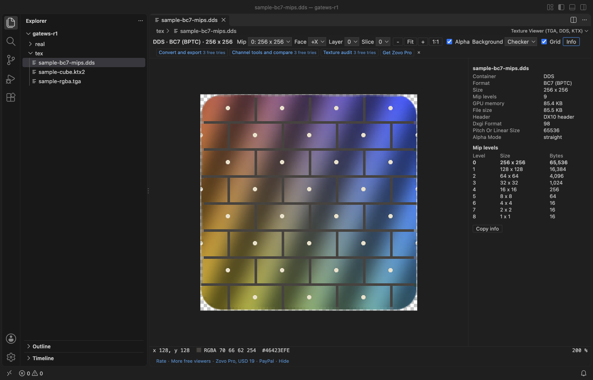

Open files in VS Code and Cursor / 3D and imaging
Open TGA, DDS and KTX texture files in VS Code
TGA Viewer & DDS, KTX Textures opens .tga, .dds, .ktx and .ktx2 files in a VS Code tab: click the file and the image shows, with its format, size and mip levels next to it. It decodes BC1 to BC7 (DXT1 to DXT5, BC6H HDR), ETC1, ETC2 and EAC, and uncompressed and float formats, with pickers for mip level, cube face, array layer and depth slice. It works offline, with no tools to install and no network calls. All of that is free. Zovo Pro (USD 19 once) adds PNG export and folder conversion, channel tools with a texture compare, and a texture audit of a folder, with 3 free tries each.
Free, MIT license. Extension ID zovo.zovo-texture-viewer, version 0.1.0. Needs VS Code 1.75.0 or newer.

Steps in VS Code
- Install TGA Viewer & DDS, KTX Textures from the Marketplace, or press Ctrl+P (Cmd+P on macOS) and run
ext install zovo.zovo-texture-viewer. - Click a
.tga,.dds,.ktxor.ktx2file in the Explorer. If another viewer opens it, right-click the file and choose Open in Texture Viewer, or use Open With. - Zoom with Ctrl or Cmd and the mouse wheel, the + and - buttons, or the keys
0(fit) and1(actual size). Drag to pan. From 8x a texel grid shows. - Step through mip levels with the Mip picker or Page Up and Page Down. Cube maps show a Face picker, arrays a Layer picker, volume textures a Slice picker.
- Point at a texel to read its RGBA and hex value (and the real float value for HDR formats) in the bottom line. Double-click to copy it.
- Press
Ato turn alpha on or off over a checker, black, gray or white background, andIfor the format panel with the pixel format, sRGB or linear, size per mip level and GPU memory.
Where Zovo Pro saves time
Viewing TGA, DDS, KTX and KTX2 files, every mip level, face, layer and slice, zoom, the texel grid, the color under the cursor, alpha backgrounds and the format panel are free, with no account and no network calls. There is no trial timer and no license banner.
When you need a PNG of a texture for a bug report, a web page or another tool, Convert and Export saves the view, or every mip level, face and layer, as PNG. It also converts a folder of TGA, DDS and KTX textures to PNG, or PNG files to TGA, with a report. The other two Pro tools are Channel Tools and Compare, which shows R, G, B and A one by one, a lit normal-map view, and two textures side by side or as a difference image with the largest difference and PSNR, and Texture Audit, which lists every texture in a folder with format, size, mips and GPU memory and warns about non-power-of-two sizes and missing mip levels, saved as CSV or Markdown.
With Convert and Export Textures (Zovo Pro)
- Open the texture and click Convert and export in the small row at the end of the viewer toolbar, or run "Texture Viewer: Convert and Export Textures (Pro)" from the Command Palette.
- Pick what to save: the current view, or every mip level, face and layer, or a whole folder.
- For the current view you pick where the PNG goes. A folder is converted into a new folder next to it, with a report. The Pro tools write only the files you ask for.
Convert and Export Textures works 3 times on your computer before it asks for a license, and a try counts only when you get a result. Opening a file shows no popup and no countdown.
Zovo Pro costs USD 19 once. It is not a subscription, and it turns on the Pro tools in every Zovo extension, not only TGA Viewer & DDS, KTX Textures. After a card payment (Stripe) your license key shows on the next page. In VS Code, run "Zovo Pro: Enter Zovo Pro license key" from the Command Palette and paste it. The key is checked on your computer, with no network call. With GitHub Sponsors, pick the "$19 one time" tier, then run "Zovo Pro: I already paid: unlock with GitHub Sponsors" and sign in with the same GitHub account. With PayPal, send USD 19 with "Zovo Pro" in the note and the key comes by email within a day.
A team of 5: USD 59 once, by card or by PayPal. Every rule and every Pro tool is on the Zovo Pro page.
Steps in Cursor, Windsurf or VSCodium
- Open the Extensions view with Ctrl+Shift+X (Cmd+Shift+X on macOS).
- Search for
zovo.zovo-texture-viewerand click Install. Cursor, Windsurf and VSCodium install from Open VSX, where it is published aszovo/zovo-texture-viewer. - If your editor has no gallery, download the .vsix from the Open VSX page and run "Extensions: Install from VSIX...".
- Then use it the same way as in VS Code.
What TGA Viewer & DDS, KTX Textures handles
- TGA types 1, 2, 3, 9, 10 and 11: color-mapped, true-color and grayscale, raw or RLE, 8 to 32 bits, any origin.
- DDS with FourCC codes or the DX10 header: BC1 to BC7, BC6H, 8 to 128-bit uncompressed and float formats, cube maps, volume textures and arrays.
- KTX 1.1 and KTX 2.0 with ETC1, ETC2 and EAC, and zlib or zstd supercompression (zstd needs an editor built on Node 22.15 or newer, such as current VS Code).
- Zoom from 1/32 to 64x.
What it does not do
- ASTC, PVRTC and Basis Universal (ETC1S and UASTC) files open with their header, levels and metadata, but their pixels are not decoded in this version.
- HDR formats are shown clamped to 0 to 1 with no tone mapping; the bottom line shows the real values.
- Files over 512 MB open with a message instead of the image. The setting
textureViewer.maxFileSizeMBchanges that. - It views textures; it does not edit pixels.
Other options
- TGA Image Preview (
lunarwtr.tga-image-preview, 12,710 installs, not on Open VSX). Its own description: "Preview TGA Images". - DirectDraw DDS Viewer (
hyuckkim.directdraw-viewer, 1,577 installs, not on Open VSX). Its own description: "show directdraw file on layer-by-layer. using parse-dds library." - Compressed Texture Viewer (
akondratiuk1-dev.texture-viewer, 646 installs, not on Open VSX). Its own description: "Preview compressed textures: DDS, KTX/KTX2, Basis, ASTC, PVR, PKM". Pick it if you need ASTC or Basis pixels. - texconv. texconv, the command line tool of Microsoft's DirectXTex, converts DDS files to PNG and back on Windows.
Install counts and Open VSX status were checked on 12 November 2026. Descriptions in quotes are the extensions' own.
Questions
Can VS Code open TGA or DDS files without an extension?
No. VS Code previews PNG, JPEG, GIF, WebP and a few other image formats, but not TGA, DDS or KTX files. You need an extension for those.
Why is my DDS texture black or not shown?
A viewer that reads only uncompressed DDS cannot show block-compressed formats such as BC7 or BC6H. This viewer decodes BC1 to BC7. If the format panel says ASTC, PVRTC or Basis, the pixels are not decoded in this version.
Can I see each mip level and cube face?
Yes. The Mip picker (or Page Up and Page Down) steps through the mip levels, and cube maps, arrays and volume textures get Face, Layer and Slice pickers.
Does it work in Cursor or Windsurf?
Yes. Cursor, Windsurf and VSCodium install extensions from Open VSX. Search for the extension in their Extensions view and install it there.
More about TGA Viewer & DDS, KTX Textures
Read the TGA Viewer & DDS, KTX Textures page for every feature and setting, or the source code on GitHub.
Related guides
- View STL files in VS Code
- Open DICOM and NIfTI files in VS Code
- Calculate the volume of an STL file
- DICOM to NIfTI in VS Code
Zovo Pro and support
Zovo Pro: USD 19 once, every Zovo viewer. It turns on the Pro tools in this extension and in the other Zovo extensions you use. The free features stay free.
After a card payment your license key shows on the next page. Paste it with the command "Zovo Pro: Enter a key".
You can also support the work with no Pro:
Need your format supported?
Open a format request with a sample file, and I reply there whether it can be done. For USD 299 once, through this GitHub Sponsors tier, I add your file format or a missing feature to this extension, with tests, within 7 days.